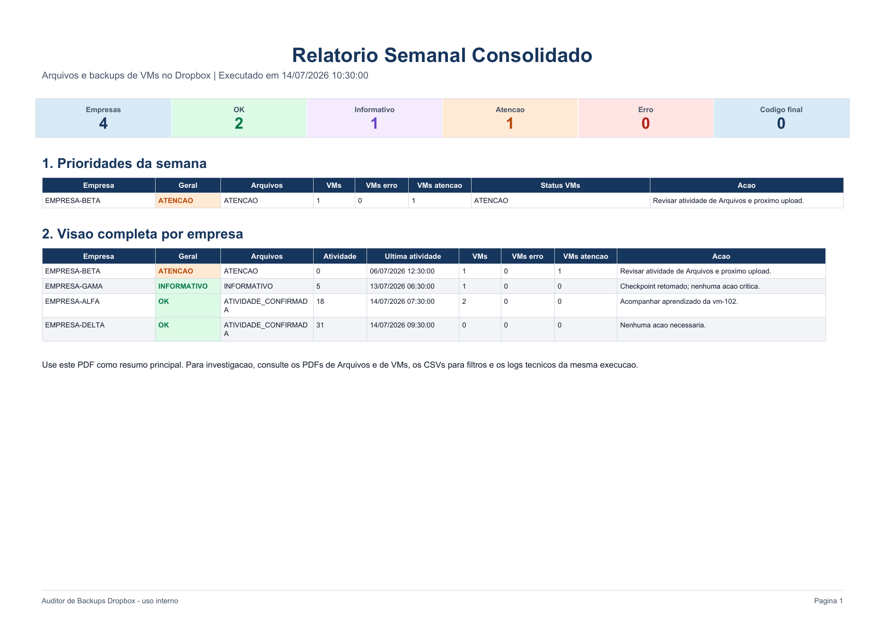

incluídas na rotina de auditoria de backups descrita no currículo.
Disponível para oportunidades em TI
Alison Gomez
Suporte, Infraestrutura e Segurança com automação aplicada.
Profissional de TI com experiência prática em suporte, redes e infraestrutura, criando automações, investigando incidentes e produzindo evidências técnicas para tornar operações mais seguras, rápidas e confiáveis.
Foco: segurança defensiva
Evidências verificadas
Impacto operacional documentado
para uma conferência que antes exigia quase cinco horas de trabalho manual.
investigação de persistência por política, contenção e validação pós-correção.
saídas técnicas para revisão, filtros, diagnóstico e registro de evidências.
Escalas operacionais confirmadas no currículo. Identificadores de ambientes e clientes foram omitidos.
Trabalho em contexto real
Cases em destaque
Problemas, decisões e evidências que demonstram segurança defensiva, automação e operação de infraestrutura.
Auditor de Backups Dropbox
Auditoria incremental de arquivos e backups de VMs já armazenados no Dropbox, aplicada a uma rotina multiempresa.
- Problema
- Conferência manual lenta entre estruturas, retenções e periodicidades diferentes.
- Ação
- Desenvolvi cursores, checkpoints, histórico por VM, regras por empresa e relatórios padronizados.
- Resultado
- A rotina de quase cinco horas passou a levar de 30 a 60 minutos, com revisão mais objetiva.

Relatório consolidado · dados de demonstraçãoExtensão maliciosa no Chrome
Persistência por política do navegador investigada com coleta controlada, hashes, análise de artefatos e validação após a contenção.
- Achado
- Machine Level User Cloud Policy reinstalava a extensão.
- Entrega
- Relatório de 16 páginas com MITRE ATT&CK e plano de resposta.
Sinalyx
Pipeline para transformar logs do pfSense em janelas analisáveis, persistir resultados e apoiar triagem em dashboard.
- Implementado
- Parser, features, modelos, decision engine, API, PostgreSQL e painel Vue.
- Limite atual
- Detecção de padrões lentos ainda depende de contexto temporal mais completo.
Projeto complementar · Desenvolvimento aplicado
VeoNyx
Aplicativo de comunidades que demonstra integração entre Flutter, API NestJS, PostgreSQL, Redis, BullMQ e MinIO, com autenticação, conteúdo social, chat e moderação em evolução.
Em desenvolvimento
Ver projeto
Como trabalho
Operação primeiro, evidência sempre
Minha base vem do suporte e da infraestrutura. Isso orienta a forma como investigo, automatizo e documento: entender o ambiente, reduzir risco e entregar algo que outra pessoa consiga revisar.
Diagnóstico
Reproduzir o problema, separar sintoma de causa e registrar o contexto técnico.
Automação segura
Eliminar repetição sem esconder decisões que ainda exigem análise humana.
Evidência
Produzir logs, relatórios e saídas que sustentem a revisão operacional.
Limites claros
Diferenciar o que está implementado, o que está em validação e o que é roadmap.
Experiência profissional
Suporte e infraestrutura aplicados a ambientes reais
Uma trajetória construída em atendimento, monitoramento, redes, servidores, automação e documentação técnica.
Meu CPD
Técnico de Suporte
Atuação em ambiente multiempresa com suporte, monitoramento e manutenção de firewalls, servidores, backups, e-mails, VMs, links e serviços críticos.
- Diagnóstico e acompanhamento de chamados N1/N2/N3.
- Tratamento de alertas em Zabbix e Grafana.
- Automação da auditoria de backups e produção de relatórios técnicos.
- Triagem de phishing e apoio à investigação de incidentes.
Atuação autônoma
Suporte, Redes e Automação
Apoio em diagnóstico, configuração de equipamentos, inventário, scripts e documentação de rotinas técnicas.
Prefeitura de Rio Claro
Estagiário de Suporte e Infraestrutura
Suporte remoto e presencial, manutenção de estações, redes de departamentos, Active Directory, permissões, cabeamento, câmeras e certificados digitais.
BRK Ambiental
Técnico de Suporte N1
Atendimento via Helpdesk, instalação e configuração de equipamentos, softwares corporativos, periféricos, backups e apoio à infraestrutura.
Competências principais
Conhecimento organizado por contexto de uso
As etiquetas indicam onde cada competência foi aplicada: experiência profissional, projeto ou estudo.
01
Segurança da Informação
- Análise e resposta inicial a incidentesProfissional
- Triagem de phishing e evidênciasProfissional
- Análise de logs e MITRE ATT&CKProjeto
- Hardening e segurança de endpointsEstudo
02
Automação
- Python e APIs REST/JSONProfissional
- Relatórios PDF, CSV e JSONProfissional
- PowerShell e scripts WindowsProfissional
- Bash e validações LinuxProjeto
03
Infraestrutura e Redes
- Windows, Linux e Windows ServerProfissional
- Proxmox, VMware e virtualizaçãoProfissional
- TCP/IP, DNS, DHCP, VPN e firewallProfissional
- pfSense, MikroTik e monitoramentoProfissional
04
Suporte e Operações
- Suporte remoto e presencial N1/N2/N3Profissional
- Troubleshooting e escalonamentoProfissional
- Zabbix, Grafana e alertasProfissional
- Documentação e inventárioProfissional
05
Desenvolvimento aplicado
- HTML, CSS e JavaScriptProjeto
- FastAPI, Vue e PostgreSQLProjeto
- Flutter, NestJS e RedisProjeto
- Git e documentação técnicaProjeto
Formação e desenvolvimento
Base acadêmica e estudo contínuo
Bacharelado em Sistemas de Informação
FHO – Fundação Hermínio Ometto · 2023–2026
Formação em programação, bancos de dados, redes, infraestrutura, sistemas operacionais, engenharia de software, segurança da informação e gestão de projetos.
Cisco Networking Academy
Suporte ao cliente de TI, fundamentos de redes, introdução à cibersegurança e defesa de rede.
Formação complementar
Algoritmos, lógica de programação, desenvolvimento web, LGPD, gestão empresarial e inglês para TI em andamento.
Contato
Vamos conversar sobre a próxima oportunidade.
Tenho interesse em posições de Segurança da Informação, automação, infraestrutura, redes, operações de TI e suporte técnico N2/N3.